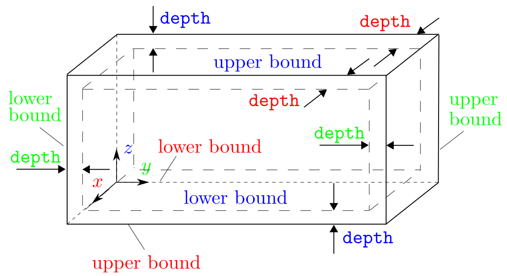

bd_group
Syntax
bd_group x boolean_l boolean_u style_cg style_at depth boolean_def time_start time_end
y boolean_l boolean_u style_cg style_at depth boolean_def time_start time_end
z boolean_l boolean_u style_cg style_at depth boolean_def time_start time_end
boolean_l,boolean_u,boolean_def= t or ft is true f is falsestyle_cg= null or element or nodestyle_at= null or atomdepth= postive real numbertime_start,time_end= non-negative integer
Examples
bd_group x f f null atom 2. t 200 1000 y t f node atom 3. t 0 1000 z t t element null 1. f 500 1000
Description
This command provides a shortcut to create groups of elements/nodes/atoms that are within a certain distance from each simulation cell boundary (6 in total). The IDs of these groups follow the regular groups created or read (from group_in_#.id) by the group command. In groups created using this command, the elements/nodes/atoms are not displaced subject to the interatomic forces. In other words, equivalently in the group command,
boolean_move,boolean_release= tvel_x,vel_y,vel_z= 0.0group_name= group_# (where # is an integer starting fromnew_group_number+restart_group_number+ 1)
Along a certain axis, boolean_l and boolean_u decide whether a group at the corresponding lower and upper boundaries is created, respectively, as illustrated in the figure below.

If a group is to be created, style_cg and style_at become non-trivial. style_cg decides whether the group contains elements (element), nodes (node), or nothing (null) in the coarse-grained domain. The differences between element and node are also important in the group command. style_at decides whether the group contains atoms (atom) or nothing (null) in the atomistic domain.
All groups defined by this command have a block shape, i.e., as if group_shape = block is set in the group command. Along the axis, for example, the groups at the lower and upper boundaries are respectively bounded by
x inf inf y inf depth z inf inf
x inf inf y upper_b-depth inf z inf inf
where upper_b is the upper boundary of the simulation cell, similar to that in the group command. The depth is in unit of the component of the lattice periodicity length vector along the corresponding axis.
boolean_def decides whether the group is deformed along with the simulation cell, the same as the one in the group command.
time_start and time_end are the simulation steps that decide when the groups begin to take effect and become unrestricted (i.e., boolean_move = f in the group command), respectively.
Related commands
Since this command provides a shortcut to create groups, all of its function can be realized by the group command.
Related files
group_init.f90
Default
None.